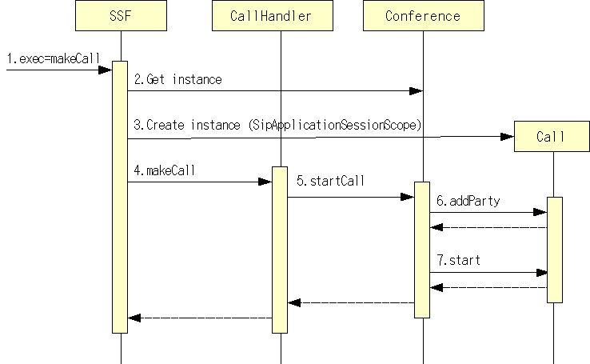

sf-api
Extending the application.
Now add the function to execute 3PCC.
In this case, if the handler might receive the same method of SIP messages when executing to proxy and 3PCC int the same SipServlet, each handler must be sort messages.
For this reason, you'd better to process messages by the other application on the same context.
Update sip.xml
As shown in the following configuration.

Edit sip.xml for this configuration.
<?xml version="1.0" encoding="UTF-8"?>
<sip-app xmlns="http://www.jcp.org/xml/ns/sipservlet"
xmlns:javaee="http://java.sun.com/xml/ns/javaee">
<app-name>sf-core-app</app-name>
<distributable />
<context-param>
<param-name></param-name>
<param-value></param-value>
</context-param>
<listener>
<listener-class>org.mobicents.ssf.servlet.SipDispatcherListener</listener-class>
</listener>
<servlet-selection>
<main-servlet>sip-dispatcher</main-servlet>
</servlet-selection>
<servlet>
<!-- Receive all inbound requests -->
<javaee:servlet-name>sip-dispatcher</javaee:servlet-name>
<javaee:servlet-class>org.mobicents.ssf.servlet.SipDispatcherServlet</javaee:servlet-class>
<javaee:load-on-startup>10</javaee:load-on-startup>
</servlet>
<!--
Receive all dispatcher requests from Web
-->
<servlet>
<javaee:servlet-name>sip-dispatcher-call</javaee:servlet-name>
<javaee:servlet-class>org.mobicents.ssf.servlet.SipDispatcherServlet</javaee:servlet-class>
<javaee:load-on-startup>11</javaee:load-on-startup>
</servlet>
<!--
<proxy-config>
<sequential-search-timeout>0</sequential-search-timeout>
</proxy-config>
-->
</sip-app>
Adding "sip-dispatcher-call" for receiving events from web application.
And edit web.xml for calling sip application.
<?xml version="1.0" encoding="UTF-8"?>
<web-app xmlns="http://java.sun.com/xml/ns/j2ee"
xmlns:xsi="http://www.w3.org/2001/XMLSchema-instance"
xsi:schemaLocation="http://java.sun.com/xml/ns/j2ee http://java.sun.com/xml/ns/j2ee/web-app_2_4.xsd"
version="2.4">
<display-name>SSF Web Applications</display-name>
<distributable/>
<context-param>
<param-name>contextConfigLocation</param-name>
<param-value>
/WEB-INF/common-beans.xml
</param-value>
</context-param>
<listener>
<listener-class>org.springframework.web.context.ContextLoaderListener</listener-class>
</listener>
<servlet>
<servlet-name>dispatcher</servlet-name>
<servlet-class>org.springframework.web.servlet.DispatcherServlet</servlet-class>
<load-on-startup>2</load-on-startup>
</servlet>
<servlet>
<servlet-name>webDispatcher</servlet-name>
<servlet-class>org.mobicents.ssf.servlet.WebDispatcherServlet</servlet-class>
<init-param>
<param-name>targetSipServletName</param-name>
<param-value>sip-dispatcher-call</param-value>
</init-param>
<load-on-startup>2</load-on-startup>
</servlet>
<servlet-mapping>
<servlet-name>dispatcher</servlet-name>
<url-pattern>*.do</url-pattern>
</servlet-mapping>
<servlet-mapping>
<servlet-name>webDispatcher</servlet-name>
<url-pattern>/webDispatcher.html</url-pattern>
</servlet-mapping>
<welcome-file-list>
<welcome-file>index.jsp</welcome-file>
</welcome-file-list>
</web-app>
In this configuration, adding initialization parameter "targetSipServletName" to WebDispatcherServlet.
WebDispatcherServlet
About WebDispatcherServlet
WebDispatcherServiet work with SipDispatcherServlet, and call SipDispatcherServlet to execute sip processing from web application
WebDispatcherServlet flow is as follows.
- Initialization
Get "targetSipServletName" from the initialization parameter.
- In calling SipDispatcherServlet
- If the value of "targetSipServletName" is specified in web.xml, get SipDispatcherServlet specified name from ServletContext
If it is not specified, get SipDispatcherServlet first found in attribute value of SrevletContext.
- Get request parameter map by HttpServletRequest.requestParameterMap().
- If the value of "WebDispatcherServlet.SIP_APPLICATION_SESSINO_ID" is specified in the parameter or the attribute of the request, processing SIP using specified id.
If it is not specified, create a new SipApplicationSession.
- If the value of "WebDispatcerServlet.SYNC_CALL" is specified in the parameter or the attribute of the request, and the value is "true", SipDispatcherServlet handles synchronous events.
Otherwise and default is "false", and SypDispatcherServlet handles asynchronous events.
In the synchronous processing, you cannot use the synchronization function with SipApplicationSession, that is provided by SIP container. If you send a SIP message, we recommended that you use asynchronous processing.
- If the value of "targetSipServletName" is specified in web.xml, get SipDispatcherServlet specified name from ServletContext
Please check the SIP Servlet container function about synchronous processing with SIP messages.
Calling WebDispatcherServlet
If WebDispatcherServlet is registered as "webDispatcher", the way to call WebDispatcherServlet from JSP or Servlet is below.
RequestDispatcher dispatcher = req.getSession().getServletContext().getNamedDispatcher("webDispatcher");
dispatcher.include(req, res);
String id = (String)req.getAttribute(WebDispatcherServlet.SIP_APPLICATION_SESSION_ID);
if(logger.isDebugEnabled()) {
logger.debug("id:" + id);
}
Create the handler for handling calls from web application
@Component
public class CallHandler {
private Logger logger = LoggerFactory.getLogger(CallHandler.class);
@DispatcherMapping(params={"exec=makeCall"})
public void makeCall(DispatcherParams params, Conference conf, Call call) throws Exception {
if(logger.isDebugEnabled()) {
logger.debug("params:" + params);
}
String p = params.getParameterAsString("parties");
String mode = params.getParameterAsString("mode");
String[] parties = toArray(p);
SipApplicationSession appSession = params.getApplicationSession();
call.setSipApplicationSession(appSession);
conf.startCall(call, parties, mode);
}
public String[] toArray(String p) {
StringTokenizer token = new StringTokenizer(p, " ,");
ArrayList<String> list = new ArrayList<String>();
while(token.hasMoreTokens()) {
list.add(token.nextToken());
}
return list.toArray(new String[]{});
}
}
Description of a new annotation.
- @DispatcherMapping
This is a original annotation of SSF. In this case, when the parameter has the value "makeCall" when specified the parameter name as "exec" and specified the parameter value as "makeCall", this method is called by SSF. And as arguments of method beans are managed in Spring's ApplicationContext
And beans in Spring's ApplicationContext will be available for arguments of method.
In this case, DispatcherParams, Conference, and Call are injected by SSF. Parameters of HTTP request is wrapped by DispatcherParams.
Create beans of each processing
For execute 3PCC, registers beans to SpringFramework below.
- LocationService
This bean is used by proxy and registrar. It is singleton scoped bean to get or register the contact information of UE(User Equipment).
- UserManagementService
This bean is used by registrar. It is singleton scoped bean to manage user's information.
- Conference
This bean is singleton socped bean to start a conference.
- Call
This bean is singleton scoped bean to manage a call.
These beans are injected for arguments by SSF.
Starting 3PCC sequence is below.
- Call WebDispatcherServlet
WebDispatcherServlet is called by the user's web application. SSF creates a SipApplicationSession, a event, and a handler with mapping of the event.
- Get the instance of Conference
Get the instance that is a argument of CallHandler.makeCall().
- Create instance of Call.
Create a "sipApplicationSession" scoped instance that is a argument of CallHandler.makeCall().
- CallHnadler.makeCall()
CallHandler class is called for starting a call. This method gets the necessary information from DispatcherParams class, and calls Conference class.
- Conference.startCall()
This method is called for starting a conference.
- Call.addParty()
This method is called for adding participants before starting 3PCC.
The scope of Call class is "sipApplicationSession", and the lifecycle of a Call instance is same as SipApplicationSession's lifecycle.
- Call.start()
A call is started for added parties.
INVITE request is sended to first added party.
As mentioned above, you can start 3PCC to combine beans.
Please refer source files of each bean about other processes.
SSF can facilitate to divide SIP processing to simple units of beans.
SIP Servlet API, ApplicationServer with EJB3.1 may be able to do same way, but that will complicate implementations.